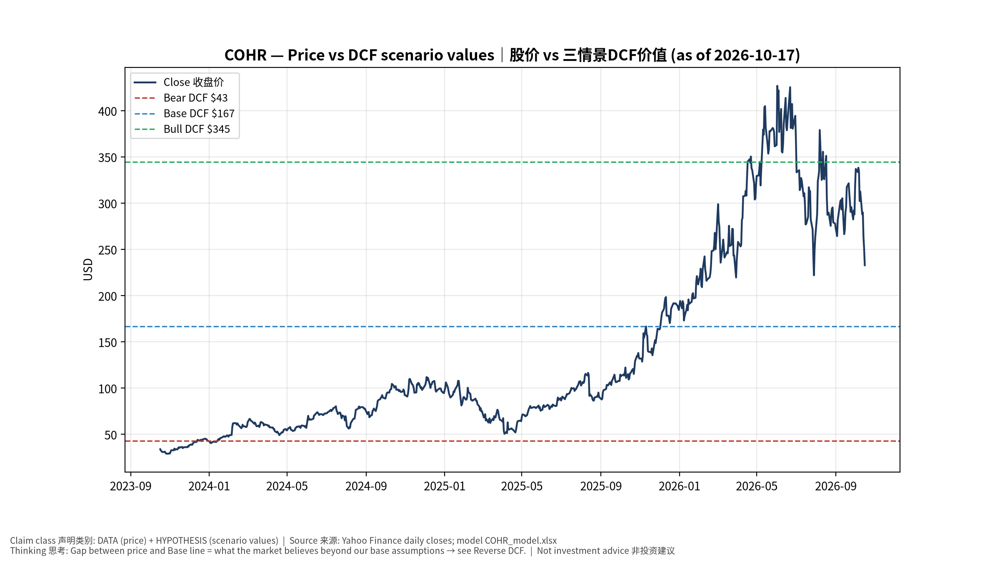
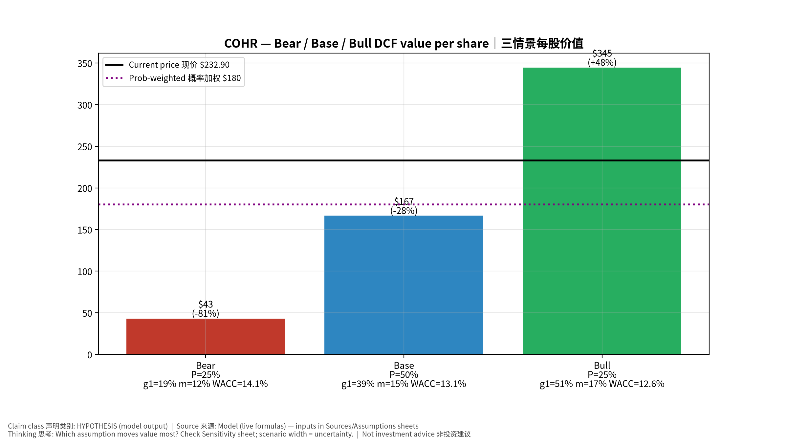
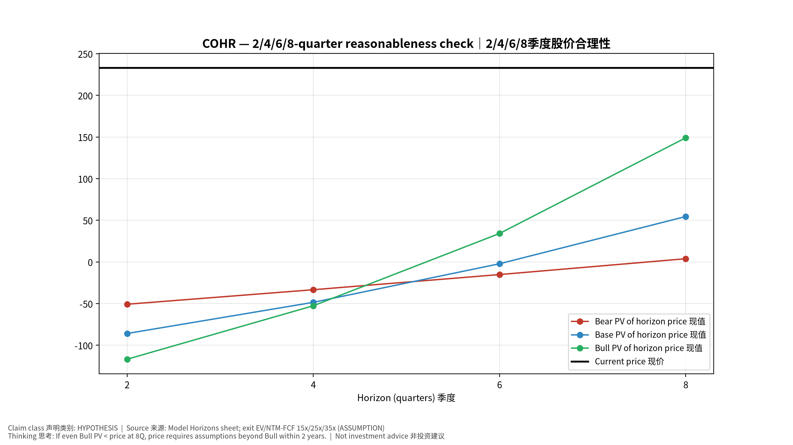
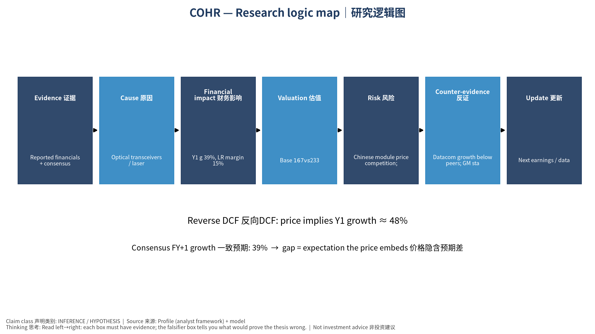

数据截至 2026-10-17 07:55 SGT｜价格 $232.90｜市值 45.9 bn USD｜财报货币 USD｜非投资建议。事实=CONFIRMED/DATA；推断=INFERENCE；假设=ASSUMPTION/HYPOTHESIS。
Coherent是垂直整合的光模块+激光器厂，受益于800G/1.6T与CPO；重整资产(剥离非核心)与提升毛利是重估关键。注意：最新FCF为负(数据期间)。
| 季度 | 收入 | 毛利 | 营业利润 | 净利润 | FCF | 营业利润率 |
|---|---|---|---|---|---|---|
| 2026-06-30 | 2.0 bn USD | 0.8 bn USD | 0.3 bn USD | 0.2 bn USD | -0.5 bn USD | 14.9% |
| 2026-03-31 | 1.8 bn USD | 0.7 bn USD | 0.2 bn USD | 0.2 bn USD | -0.4 bn USD | 12.5% |
| 2025-12-31 | 1.7 bn USD | 0.6 bn USD | 0.2 bn USD | 0.1 bn USD | -95.7 mn USD | 11.8% |
| 2025-09-30 | 1.6 bn USD | 0.6 bn USD | 0.2 bn USD | 0.2 bn USD | -58.0 mn USD | 10.9% |
| 2025-06-30 | 1.5 bn USD | 0.5 bn USD | 0.1 bn USD | -95.6 mn USD | -1.1 mn USD | 9.5% |
| 2025-03-31 | N/A | N/A | N/A | N/A | N/A | N/A |
资产负债: 现金 2.0 bn USD；总负债 3.6 bn USD；净现金 -1.6 bn USD。TTM FCF -1.0 bn USD（FCF率 -14.5%）。
| 季度 | EPS实际 | EPS一致预期 | 超预期% |
|---|---|---|---|
| 2025-09-30 | 1.16 | 1.04249 | 0.11270001 |
| 2025-12-31 | 1.29 | 1.20766 | 0.0682 |
| 2026-03-31 | 1.41 | 1.39433 | 0.0112 |
| 2026-06-30 | 1.74 | 1.61709 | 0.076 |
| 期限 | 情景 | 期限价格现值 | 相对现价 |
|---|---|---|---|
| 2Q | Bear | $-50.74 | -121.8% |
| 2Q | Base | $-85.85 | -136.9% |
| 2Q | Bull | $-116.75 | -150.1% |
| 4Q | Bear | $-33.31 | -114.3% |
| 4Q | Base | $-48.44 | -120.8% |
| 4Q | Bull | $-52.58 | -122.6% |
| 6Q | Bear | $-15.11 | -106.5% |
| 6Q | Base | $-2.14 | -100.9% |
| 6Q | Bull | $34.20 | -85.3% |
| 8Q | Bear | $3.91 | -98.3% |
| 8Q | Base | $54.57 | -76.6% |
| 8Q | Bull | $149.10 | -36.0% |
| 现价隐含的 EV/NTM-FCF (Base 路径): | 期限 |
|---|---|
| 2Q | n/m (neg FCF) |
| 4Q | n/m (neg FCF) |
| 6Q | 1122.3x |
| 8Q | 77.5x |
解读: 如果8季度后Base情景所需倍数仍远高于25x，说明价格依赖更远期的增长。
| 情景 | Y1增速 | 长期FCF率 | WACC | 永续g | 概率 | 每股价值 | 相对现价 |
|---|---|---|---|---|---|---|---|
| Bear | 19.5% | 12.0% | 14.1% | 2.5% | 25.0% | $43.16 | -81.5% |
| Base | 38.9% | 15.0% | 13.1% | 3.0% | 50.0% | $166.62 | -28.5% |
| Bull | 50.6% | 17.2% | 12.6% | 3.5% | 25.0% | $344.61 | 48.0% |
概率加权价值 $180.25（相对现价 -22.6%）。
DCF Base: EV 34.4 bn USD；终值占比 59.3%。
Reverse DCF 反向DCF: 在Base利润率与WACC下，现价隐含Y1收入增速 ≈ 47.6%；一致预期FY+1增速 38.9%。
WACC (CAPM) = rf 5.1% + β 1.60 × ERP 5.0% = 13.1%。
SOTP segments 分部: Datacom transceivers 数通光模块; Telecom 电信; Industrial lasers & materials (SiC) 工业激光与材料. Status: framework only — segment revenues are INPUT REQUIRED from the latest 10-K/10-Q segment note (not auto-fed, left blank to avoid fabrication)｜分部收入需按最新财报手动录入，未自动填充以避免编造。
同业比较 Comps (DATA): | Ticker | 市值 | EV/Sales | Fwd P/E | 收入增速 | 毛利率 | FCF收益率 | |—|—|—|—|—|—|—| | COHR | 45.9 bn USD | 6.7x | 16.6x | 33.7% | 37.5% | -2.2% | | LITE | 74.7 bn USD | 24.2x | 22.9x | 109.3% | 44.2% | 0.3% | | CIEN | 47.2 bn USD | 7.9x | 28.0x | 37.0% | 44.1% | 1.3% | | FN | 13.0 bn USD | 2.6x | 16.7x | 44.6% | 12.0% | -0.4% | | AAOI | 6.4 bn USD | 10.4x | 16.4x | 86.4% | 28.9% | -13.8% |
敏感度: 见Excel Sensitivity 表 (WACC ×
永续增长率)。
| Item | Value | Source/time |
|---|---|---|
| Price 股价 | 232.9 | Yahoo Finance quote, fetched 2026-10-17T07:55 SGT |
| Market cap 市值 | 4.587e+10 | Yahoo info.marketCap 2026-10-17T07:55 |
| Cash 现金 | 1.99e+09 | Yahoo info.totalCash (latest filing) 2026-10-17T07:55 |
| Debt 负债 | 3.553e+09 | Yahoo info.totalDebt (latest filing) 2026-10-17T07:55 |
| Revenue TTM 收入 | 7.118e+09 | Yahoo info.totalRevenue (TTM, USD) 2026-10-17T07:55 |
| FCF TTM 自由现金流 | -1.031e+09 | Sum of last 4 quarterly FCF (q_cash); quarters [‘2026-06-30’, ‘2026-03-31’, ‘2025-12-31’, ‘2025-09-30’] (USD) |
| Beta | 2.113 | Yahoo info.beta (5Y monthly) |
| Risk-free 10Y 无风险利率 | 0.051 | FRED DGS10 2026-10-15 |
| FX USD per USD | 1 | n/a (USD) |
| Consensus rev growth FY0 | 0.4933 | Yahoo revenue_estimate 0y |
| Consensus rev growth FY+1 | 0.3892 | Yahoo revenue_estimate +1y |
| Assumption | Value | Rationale |
|---|---|---|
| ERP 股权风险溢价 | 0.05 | ASSUMPTION: 5.0% house mature-market ERP |
| Beta clamp | [0.8,1.6] → 1.60 | ASSUMPTION: limit extreme betas |
| Tax rate (ROIC) | 0.18 | ASSUMPTION: blended cash tax 18% |
| Year-1 growth (Base) | 0.3892 | Consensus FY+1 revenue growth (Yahoo revenue_estimate ‘+1y’); capped at 100% |
| Growth fade | linear Y1→terminal by Y10 | ASSUMPTION |
| Starting FCF margin | -0.1448 | DATA: FCF TTM / Revenue TTM, floored -50% |
| Long-run FCF margin (Base) | 0.15 | ASSUMPTION (analyst framework, reached by Y5; see profile) |
| Bear/Bull Y1 growth multiplier | 0.5x / 1.3x | ASSUMPTION |
| Bear/Bull margin multiplier | 0.8x / 1.15x | ASSUMPTION |
| WACC adj Bear/Bull | +1.0pp / -0.5pp | ASSUMPTION |
| Terminal g Bear/Base/Bull | 2.5% / 3.0% / 3.5% | ASSUMPTION |
| Scenario probabilities | 25% / 50% / 25% | ASSUMPTION |
| Horizon exit EV/NTM-FCF Bear/Base/Bull | 15x / 25x / 35x | ASSUMPTION |
| Per-share conversion | value × fx ÷ market cap × price | METHOD: avoids ADR/share-class mismatch |
COHR_model_v20261017-0755.xlsx (live
formulas; sheets
Inputs→Scenarios→DCF→ReverseDCF→Sensitivity→Horizons→SOTP→Comps→ROIC_WACC→History→Sources→Assumptions)production/pipeline/model.py (Python mirror;
values in this report = Python mirror, verified against LibreOffice
recalculation of the xlsx)data/snapshots/20261017-0755 (immutable)
| Fetched 2026-10-17 07:55 SGT | Generated 2026-10-17 07:57 SGT
股价vs三情景价值 Price vs scenario values
季度财务 Quarterly financials

三情景 Scenarios

2/4/6/8季度检验 Horizon check

研究逻辑图 Logic map
Data as of 2026-10-17 07:55 SGT | Price $232.90 | Mkt cap 45.9 bn USD | Reporting currency USD | Not investment advice.
Coherent is a vertically integrated transceiver + laser maker benefiting from 800G/1.6T and CPO; portfolio pruning and gross-margin expansion are the rerating keys. Note: latest FCF is negative (data period).
| Quarter | Revenue | Gross profit | Op income | Net income | FCF | Op margin |
|---|---|---|---|---|---|---|
| 2026-06-30 | 2.0 bn USD | 0.8 bn USD | 0.3 bn USD | 0.2 bn USD | -0.5 bn USD | 14.9% |
| 2026-03-31 | 1.8 bn USD | 0.7 bn USD | 0.2 bn USD | 0.2 bn USD | -0.4 bn USD | 12.5% |
| 2025-12-31 | 1.7 bn USD | 0.6 bn USD | 0.2 bn USD | 0.1 bn USD | -95.7 mn USD | 11.8% |
| 2025-09-30 | 1.6 bn USD | 0.6 bn USD | 0.2 bn USD | 0.2 bn USD | -58.0 mn USD | 10.9% |
| 2025-06-30 | 1.5 bn USD | 0.5 bn USD | 0.1 bn USD | -95.6 mn USD | -1.1 mn USD | 9.5% |
| 2025-03-31 | N/A | N/A | N/A | N/A | N/A | N/A |
Cash 2.0 bn USD; debt 3.6 bn USD; TTM FCF -1.0 bn USD (FCF margin -14.5%).
| Quarter | EPS actual | EPS consensus | Surprise |
|---|---|---|---|
| 2025-09-30 | 1.16 | 1.04249 | 0.11270001 |
| 2025-12-31 | 1.29 | 1.20766 | 0.0682 |
| 2026-03-31 | 1.41 | 1.39433 | 0.0112 |
| 2026-06-30 | 1.74 | 1.61709 | 0.076 |
| Horizon | Scenario | PV of horizon price | vs current |
|---|---|---|---|
| 2Q | Bear | $-50.74 | -121.8% |
| 2Q | Base | $-85.85 | -136.9% |
| 2Q | Bull | $-116.75 | -150.1% |
| 4Q | Bear | $-33.31 | -114.3% |
| 4Q | Base | $-48.44 | -120.8% |
| 4Q | Bull | $-52.58 | -122.6% |
| 6Q | Bear | $-15.11 | -106.5% |
| 6Q | Base | $-2.14 | -100.9% |
| 6Q | Bull | $34.20 | -85.3% |
| 8Q | Bear | $3.91 | -98.3% |
| 8Q | Base | $54.57 | -76.6% |
| 8Q | Bull | $149.10 | -36.0% |
| Current-price implied EV/NTM-FCF on Base path: | Horizon |
|---|---|
| 2Q | n/m (neg FCF) |
| 4Q | n/m (neg FCF) |
| 6Q | 1122.3x |
| 8Q | 77.5x |
| Scenario | Y1 growth | LR FCF margin | WACC | Terminal g | Prob. | Value/share | vs price |
|---|---|---|---|---|---|---|---|
| Bear | 19.5% | 12.0% | 14.1% | 2.5% | 25.0% | $43.16 | -81.5% |
| Base | 38.9% | 15.0% | 13.1% | 3.0% | 50.0% | $166.62 | -28.5% |
| Bull | 50.6% | 17.2% | 12.6% | 3.5% | 25.0% | $344.61 | 48.0% |
Probability-weighted value $180.25 (-22.6% vs price).
Comps.Sensitivity (WACC × terminal
g).Chinese module price competition; industrial weakness; debt｜中国模块价格战；工业疲弱；负债 | Falsifiers: Datacom growth below peers; GM stalls｜数通增速落后同业；毛利停滞
See tables above (shared, bilingual). - Model file:
COHR_model_v20261017-0755.xlsx (live formulas; sheets
Inputs→Scenarios→DCF→ReverseDCF→Sensitivity→Horizons→SOTP→Comps→ROIC_WACC→History→Sources→Assumptions)
- Engine: production/pipeline/model.py (Python mirror;
values in this report = Python mirror, verified against LibreOffice
recalculation of the xlsx) - Data snapshot:
data/snapshots/20261017-0755 (immutable) | Fetched
2026-10-17 07:55 SGT | Generated 2026-10-17 07:57 SGT - Version:
v20261017-0755. Prior versions are never overwritten (see company
history page).